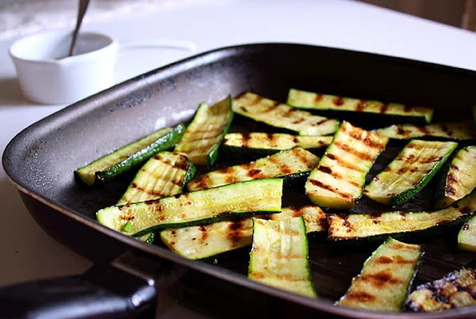

Zucchini Bites

Description
This is an easy zucchini recipe with Mediterranean roots - all you need is zucchini, parsley, olive oil, vinegar, and garlic for this simple vegan side.
Ingredients
- 2 medium zucchini, sliced lengthwise
- 4 tablespoons extra-virgin olive oil
- 2 tablespoons white wine vinegar
- 2 tablespoons chopped fresh parsley
- 2 cloves garlic, minced
- salt and freshly ground black pepper to taste
Steps
- Season zucchini with salt and pepper and brush lightly with olive oil.
- Heat a grill pan over medium-high heat. Place zucchini slices, a few at a time, into hot pan and cook until the pattern of the pan is imprinted into zucchini, about 4 minutes. Turn and cook an additional 3 to 4 minutes.
- Combine olive oil, vinegar, parsley, garlic, salt, and pepper in a small bowl. Brush cooked zucchini with olive oil mixture and serve.